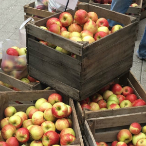

Food Vendors

Over the weekend, vendors will be selling plenty of amazing apple dishes. There will base hot apple cider donuts, kettle corn, and fresh baked goods. All vendors come from local farms and restaurants!
Craft Show

Come to the Craft show to see the work of local artisans. The vendors will be selling a multitude of items, such as jewelry, posters, paintings, clothes, soaps, lotions, and even more!
Farmer's Market
Local farmers will be selling fresh produce, winderies and cideries will be selling beverages, and there will be plenty of samples! These vendors can be seen at the local Ithaca Farmer's Market every weekend.
Science Caberet

Science Cabaret mixes science, art, and audience participation in an exquisite cocktail. See us on Sunday, Oct 1 at 3pm on the Bernie Milton Pavilion Stage.
Monks and Makers

YOU MUST BE 21 TO ATTEND THIS EVENT. Join us Sunday October 1 from 1-5PM at Ithaca Marriot for a 40 minute tasting session from some NYS cideries and the Downtown Ithaca restaurant Monks on the Commons at the Ithaca Marriot. All participating cideries will also be selling right at the event! RSVP here
Performances

Come listen to performances all weekend from local artists. Performances will be happening on the Bernie Milton Pavilion and West State Street Performance Area during the hours of the festival. Please check out the schedule of performers here